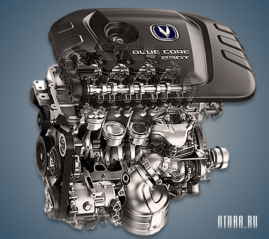
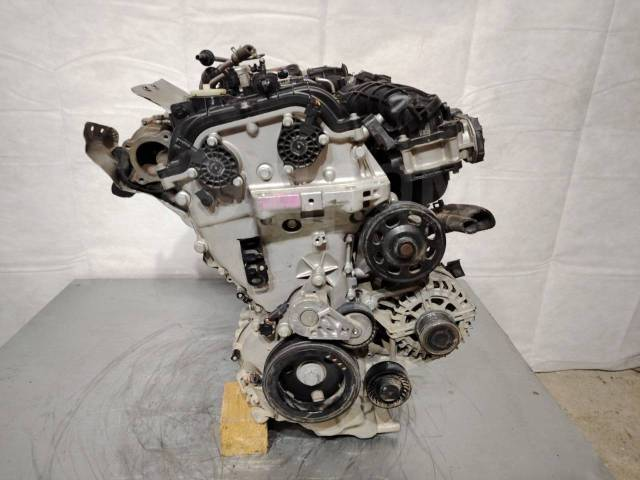
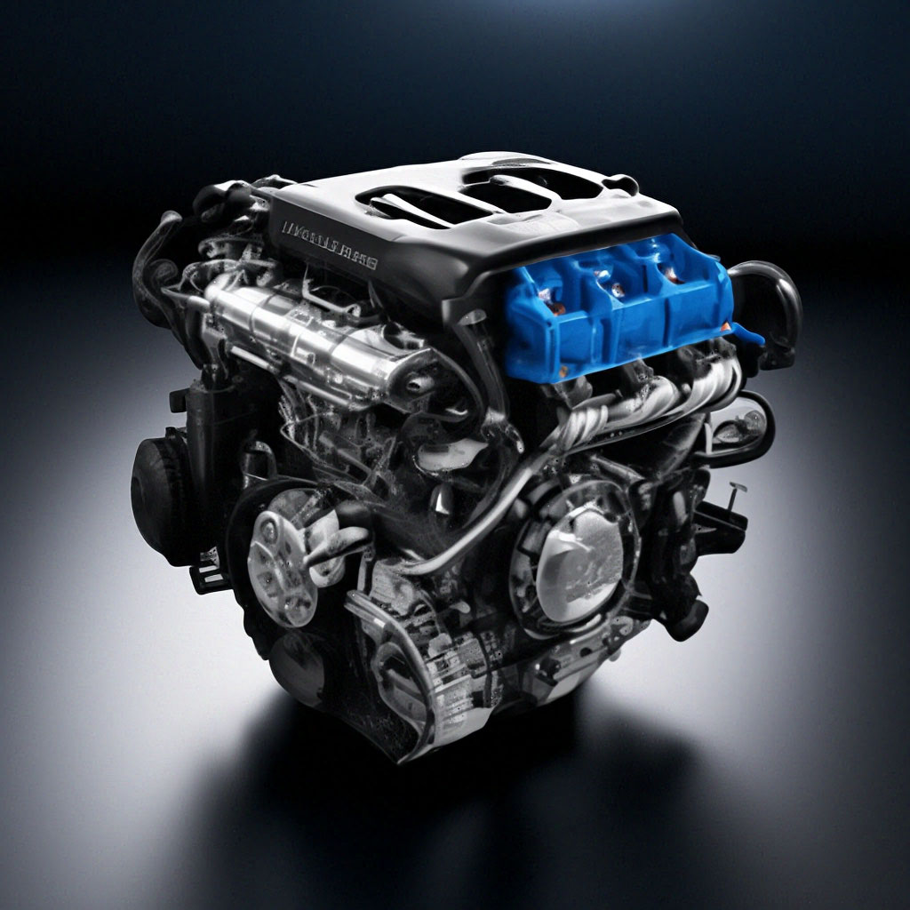
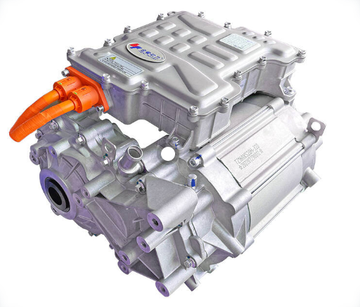

BlueCore 1.5T

- Объём: 1.5 л
- Мощность: 178 л.с.
- Крутящий момент: 265 Нм
- Тип: турбо, бензин
- Расход: ~6.8 л/100 км
1.5-литровый турбированный двигатель BlueCore — один из самых популярных у Changan. Он сочетает хорошую мощность и экономичный расход топлива, что делает его идеальным для городских автомобилей.
BlueCore 2.0T

- Объём: 2.0 л
- Мощность: 233 л.с.
- Крутящий момент: 360 Нм
- Тип: турбо, бензин
- Разгон 0–100 км/ч: ~7.5 сек
2.0-литровый турбированный двигатель используется в более мощных моделях и обеспечивает высокую динамику и быстрый разгон.
BlueCore 1.6

- Объём: 1.6 л
- Мощность: 125 л.с.
- Крутящий момент: 160 Нм
- Тип: бензин, атмосферный
- Расход: ~6.8–7.2 л/100 км
1.6-литровый атмосферный двигатель — простой и надёжный вариант, который часто используется в бюджетных моделях и отличается лёгким обслуживанием.
BlueCore iDD 1.5T

- Тип: гибрид (бензин + электромотор)
- Объём бензинового двигателя: 1.5 л
- Мощность системы: около 215 л.с.
- Разгон 0–100 км/ч: ~7.3 сек
- Расход топлива: около 1.3 л/100 км
- Запас хода на электричестве: до 100–125 км
BlueCore iDD 1.5T — один из самых современных гибридных двигателей Changan. Он работает вместе с электромотором и обеспечивает высокую мощность при очень маленьком расходе топлива.
Электрический двигатель Changan (EV Motor)

- Тип: полностью электрический
- Мощность электромотора: до 170 л.с.
- Крутящий момент: до 330 Нм
- Разгон 0–100 км/ч: около 7–8 сек
- Тип двигателя: синхронный электромотор
Электрические двигатели Changan используются в новых моделях и отличаются тихой работой и высокой эффективностью. Такие моторы дают быстрый разгон и не требуют топлива.
Это одни из известных движков Changan. Надеюсь было интересно !?